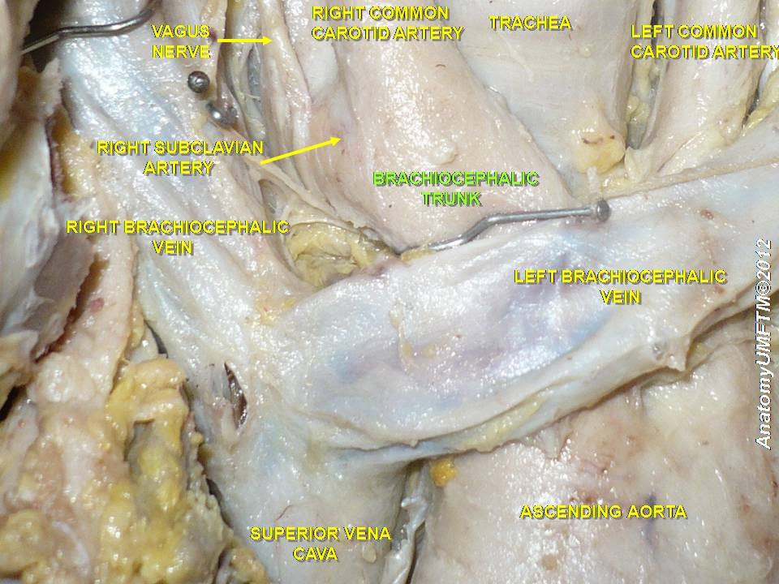
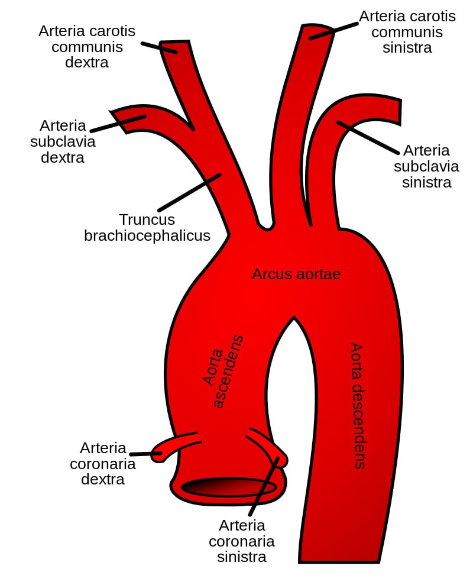

Yelka-bosh poyasi (yoki braxiosefalik poya yoki) aortaning ravog'idan bo'lib, o'ng qo'l, bosh va bo'yinni qon bilan ta'minlaydi[1]. Bu aorta yoyining birinchi tarmog'idir. yelka-bosh poyasi aortadan chiqqanidan ko'p o'tmay, o'ng umumiy uyqu arteriyasi va o'ng o'mrovosti arteriyasiga bo'linadi. Tananing chap tomonidan yelka-bosh poyasi chiqmaydi. Chap umumiy uyqu va chap o'mrovosti arteriyasi to'g'ridan-to'g'ri aorta yoyidan chiqadi. Biroq, ikkita yelka-bosh venalari mavjud[2]. Tuzilishi Yelka-bosh poyasi aorta yoyi boshlanishidan[3] ikkinchi o'ng qovurg'a tog'ayi yuqori chegarasi sohasida chiqadi. U yuqoriga qiyshiq yo'nalib, orqaga va o'ngga o'ng to'sh-o'mrov bo'g'imining yuqori chegarasi darajasiga ko'tariladi va u yerda o'ng umumiy uyqu arteriyasi va o'ng o'mrovosti arteriyalariga bo'linadi. Keyin arteriya o'zining oldidagi traxeyani chapdan o'ngga, taxminan, traxeyaning o'rtasida yoki yoki to'qqizinchi traxeya tog'ayi darajasida kesib o'tadi.
Aloqalar Yelka-bosh poyasi quyidagilar bilan aloqa qiladi[4]: oldindan - chap o'pka-bosh venasi va timus orqa - traxeya o'ng - yuqori kavak vena, o'ng o'pka-bosh venasi va plevra chap - chap umumiy uyqu arteriyasi va timus Timus odatda o'pka-bosh poyasining tepasida joylashadi va arteriyani to'sh dastasining orqa yuzasidan ajratib turadi[5]: Tarmoqlari Top qalqonsimon arteriya traxeya oldidan qalqonsimon bezning pastki qismiga ko'tarilib, uni bilan ta'minlaydi. Klinik ahamiyati O'pka-bosh poyasi anevrizmalari barcha arterial anevrizmalarning 3% ni tashkil qiladi. Tromboembolik asoratlar va o'z-o'zidan yorilish xavfi mavjudligi sababli, odatda erta davrda jarrohlik bilan davolash tavsiya etiladi. O'pka-bosh poyasi anevrizmalari ko'pincha o'pka-bosh poyasi siqilish sindromi belgilari bilan namoyon bo'lishi mumkin va yorilish xavfi juda yuqori[6]. O'pka-bosh poyasi anevrizmalarining aksariyati ateroskleroz tufayli yuzaga keladi. Boshqa sabablarga sifilis, sil, Kavasaki kasalligi, Takayasu arteriti, Behchet kasalligi, biriktiruvchi to'qima kasalligi va angiosarkomalarni kiradi[6]. Fotogalereya
